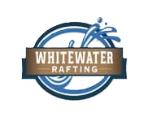
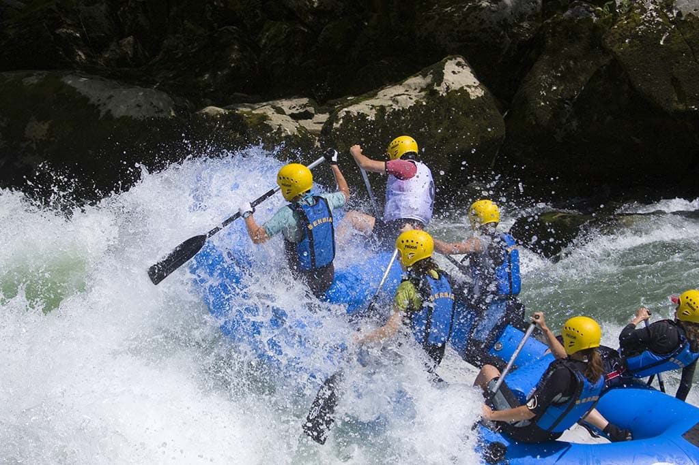
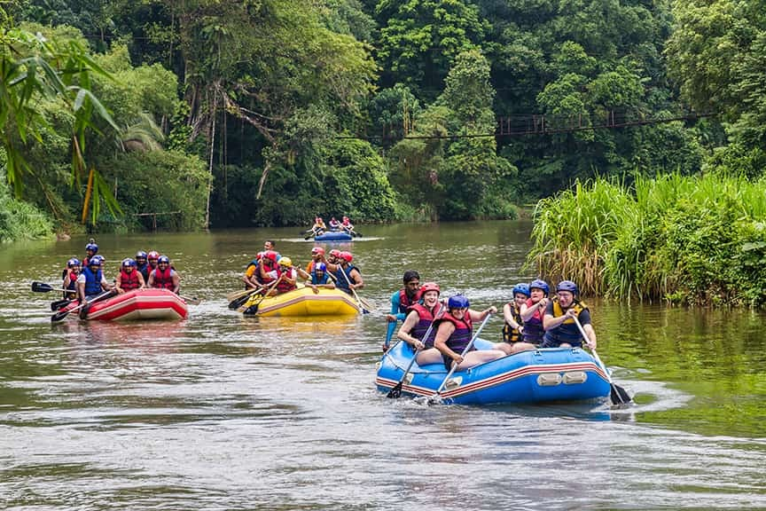
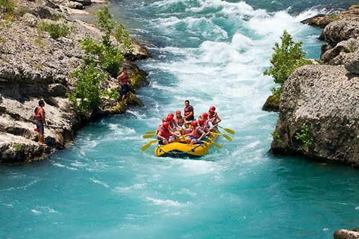
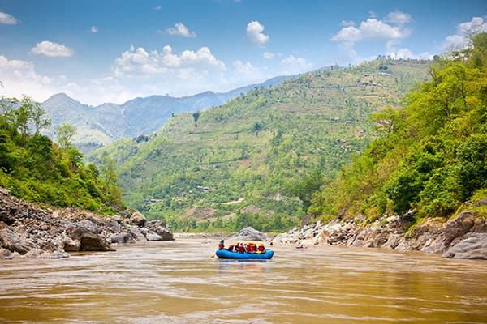

We Dare You to Contact Us!!
If you click the button below, you need physchological help!


If you click the button below, you need physchological help!



| Run Name | Max Class | Helmets Req'd? | Survival Rate |
|---|---|---|---|
| Sleep Run | Class 1 | No | 100% |
| Finnigan's Run | Class 7 | No Point! | 27% |
| Muddy Run | Class 4 | Sure... | 100% (40% after 3 months) |
| Try Your Luck... | |||